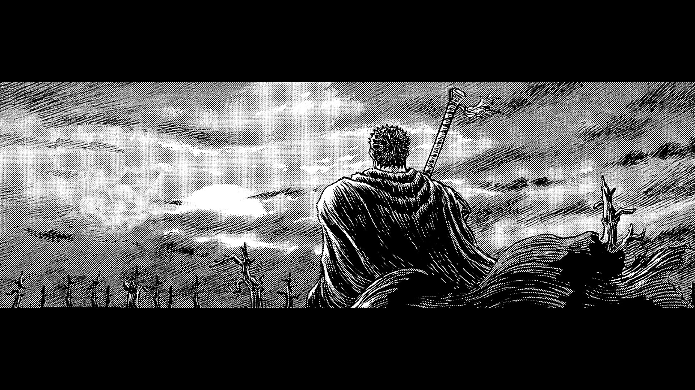
Puan: 9.47/10
Cilt/Bölüm: 43 Cilt / 383 Bölüm
Durum: Uzun Aralıklı (Son: 09/2025)
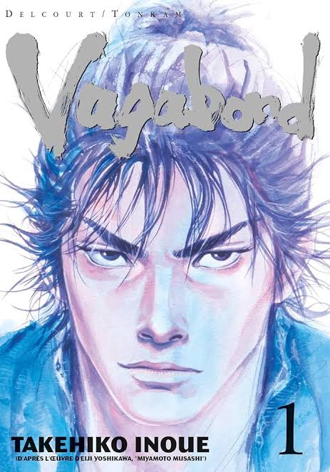
Puan: 9.24/10
Cilt/Bölüm: 37 Cilt / 327 Bölüm
Durum: Belirsiz Ara (2015'ten beri)
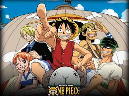
Puan: 9.22/10
Cilt/Bölüm: 114 Cilt / 1176 Bölüm
Durum: Devam Ediyor
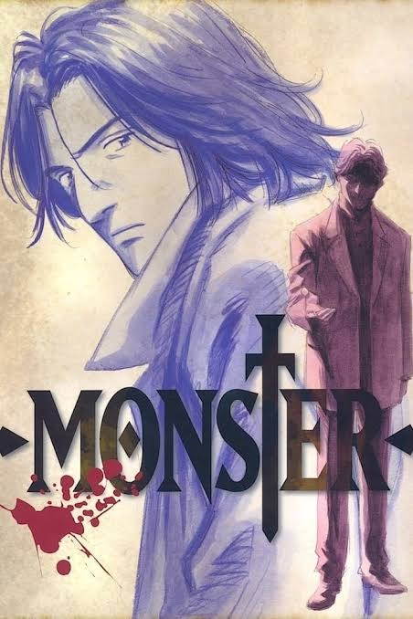
Puan: 9.15/10
Cilt/Bölüm: 18 Cilt / 162 Bölüm
Durum: Tamamlandı
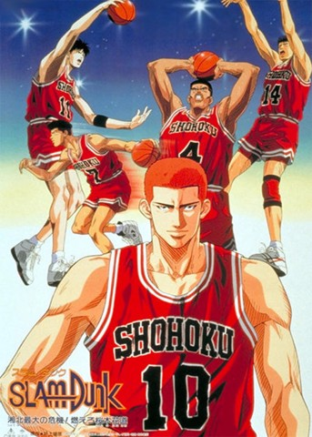
Puan: 9.08/10
Cilt/Bölüm: 31 Cilt / 276 Bölüm
Durum: Tamamlandı
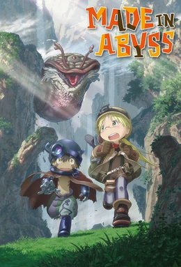
Puan: 9.06/10
Cilt/Bölüm: 14 Cilt / 71+ Bölüm
Durum: Devam Ediyor (Ağustos 2025 Cilt 14)
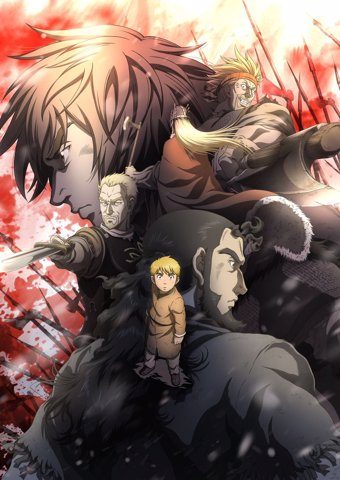
Puan: 9.05/10
Cilt/Bölüm: 28 Cilt / 220+ Bölüm
Durum: Devam Ediyor
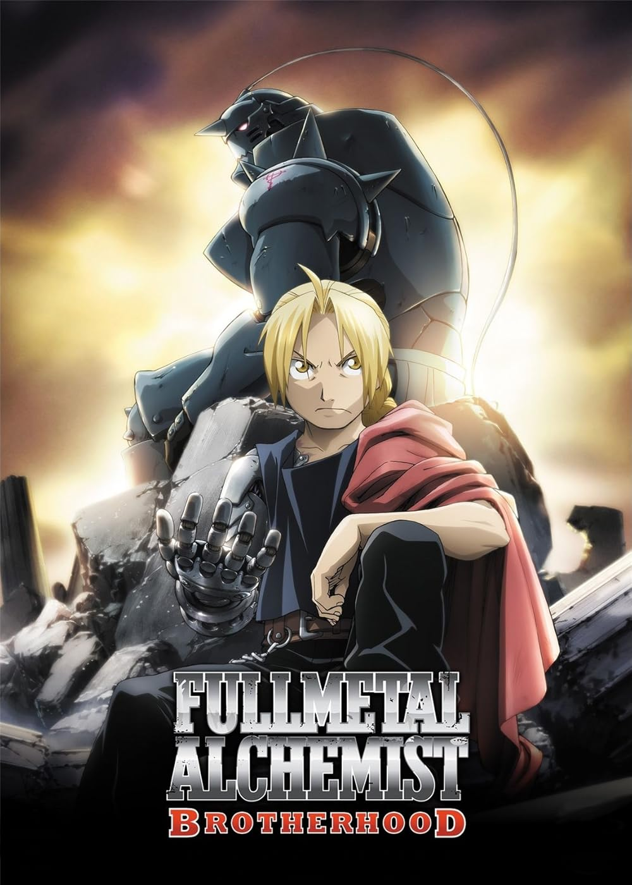
Puan: 9.04/10
Cilt/Bölüm: 27 Cilt / 116 Bölüm
Durum: Tamamlandı
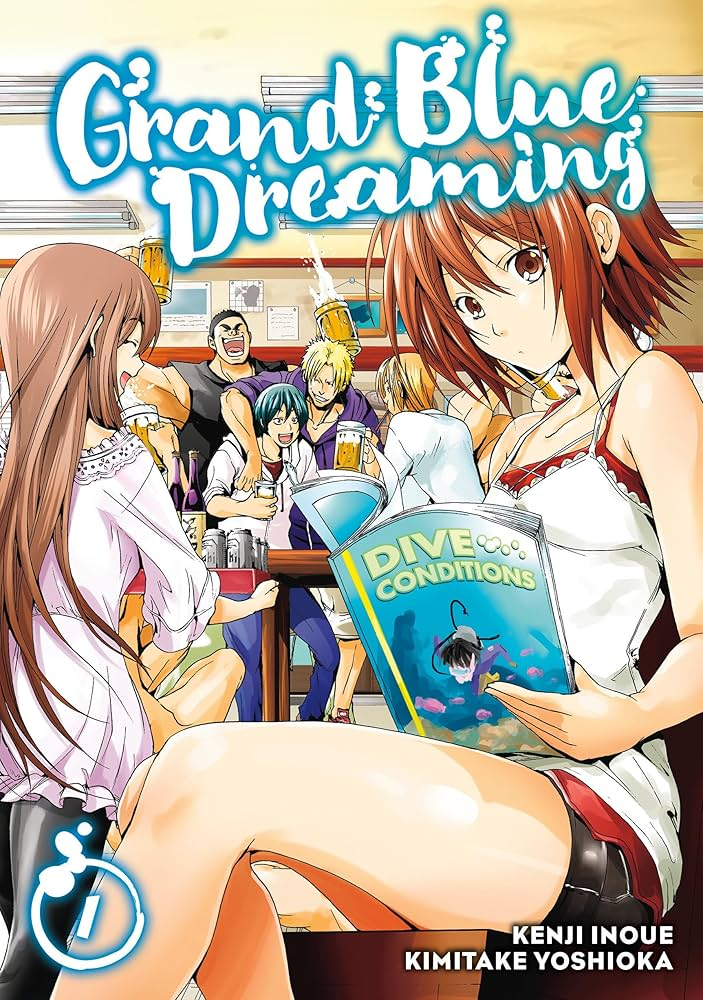
Puan: 9.03/10
Cilt/Bölüm: 25 Cilt / 100+ Bölüm
Durum: Devam Ediyor (Ekim 2025 Cilt 25)
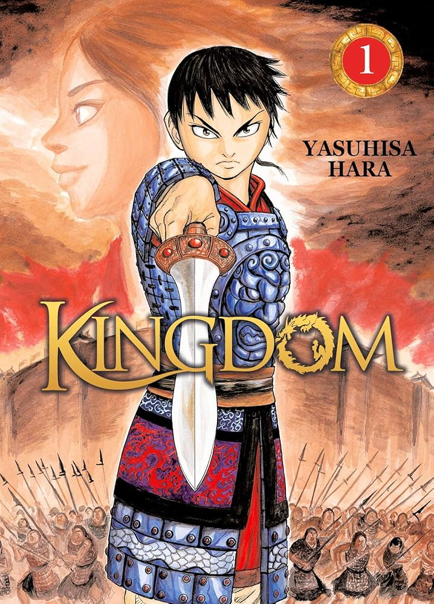
Puan: 9.01/10
Cilt/Bölüm: 78 Cilt / 855+ Bölüm
Durum: Devam Ediyor

Puan: 9.00/10
Cilt/Bölüm: 13 Cilt / 147 Bölüm
Durum: Tamamlandı
Puan: 8.94/10
Cilt/Bölüm: 16 Cilt / 108+ Bölüm
Durum: Düzensiz Yayın
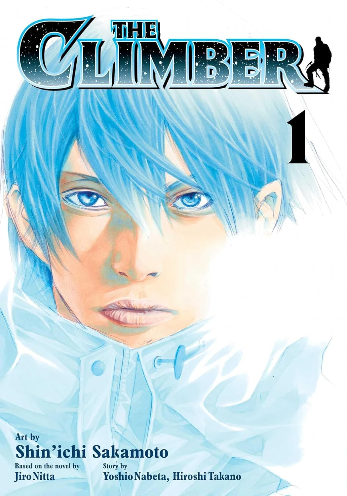
Puan: 8.93/10
Cilt/Bölüm: 17 Cilt / 170 Bölüm
Durum: Tamamlandı
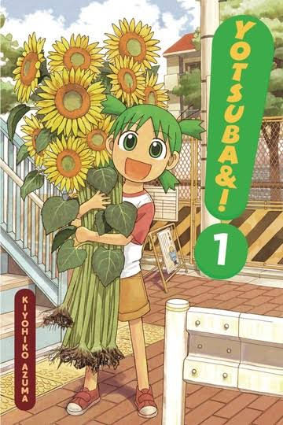
Puan: 8.91/10
Cilt/Bölüm: 16 Cilt / 113 Bölüm
Durum: Devam Ediyor

Puan: 8.88/10
Cilt/Bölüm: 17 Cilt / 220+ Bölüm
Durum: Devam Ediyor
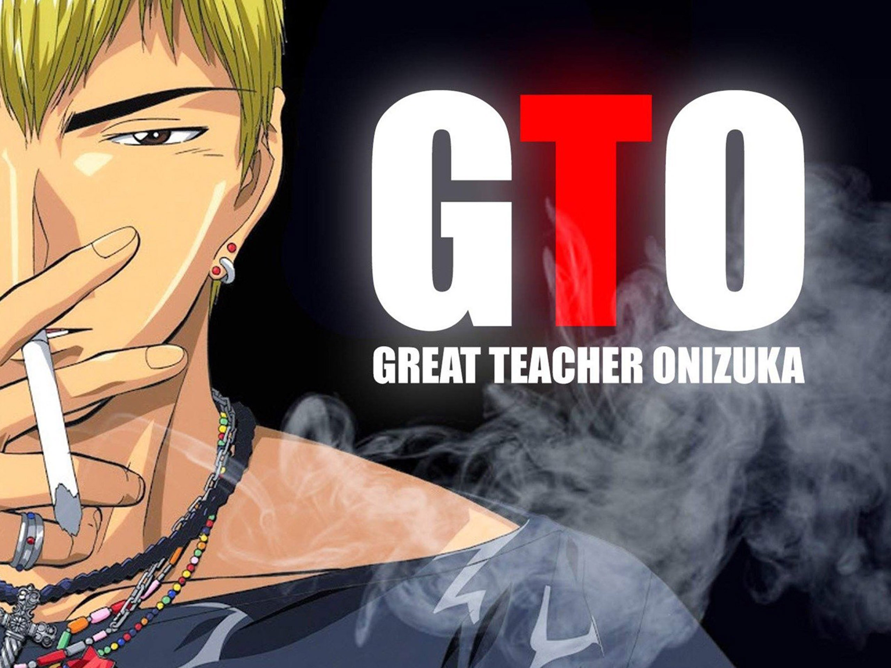
Puan: 8.87/10
Cilt/Bölüm: 25 Cilt / 200 Bölüm
Durum: Tamamlandı
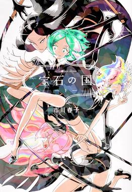
Puan: 8.86/10
Cilt/Bölüm: 13 Cilt / 108 Bölüm
Durum: Tamamlandı
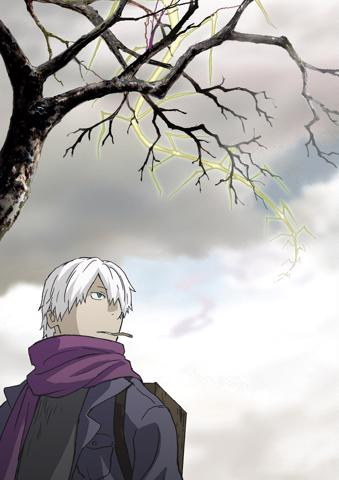
Puan: 8.76/10
Cilt/Bölüm: 10 Cilt / 50 Bölüm
Durum: Tamamlandı
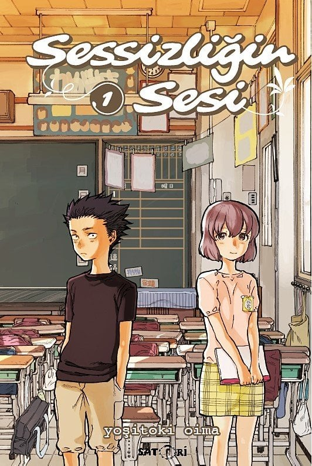
Puan: 8.74/10
Cilt/Bölüm: 7 Cilt / 64 Bölüm
Durum: Tamamlandı
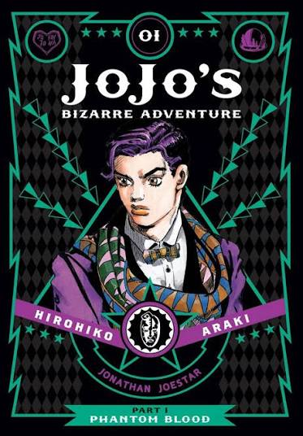
Puan: 8.35/10
Cilt/Bölüm: 138 Cilt / ~992 Bölüm
Durum: Part 9 Devam Ediyor (Tüm Seri Ort.)